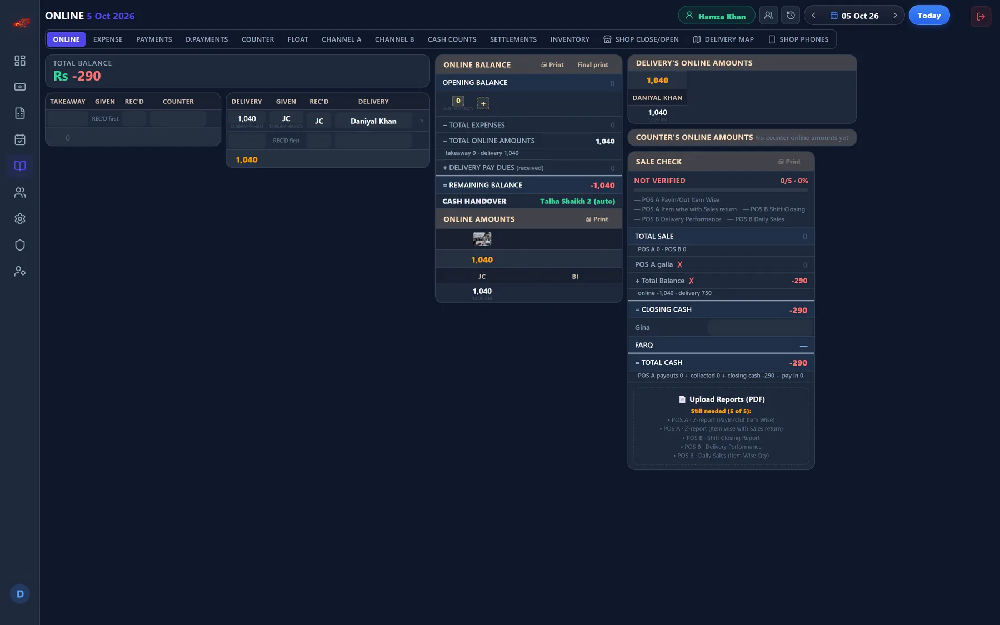
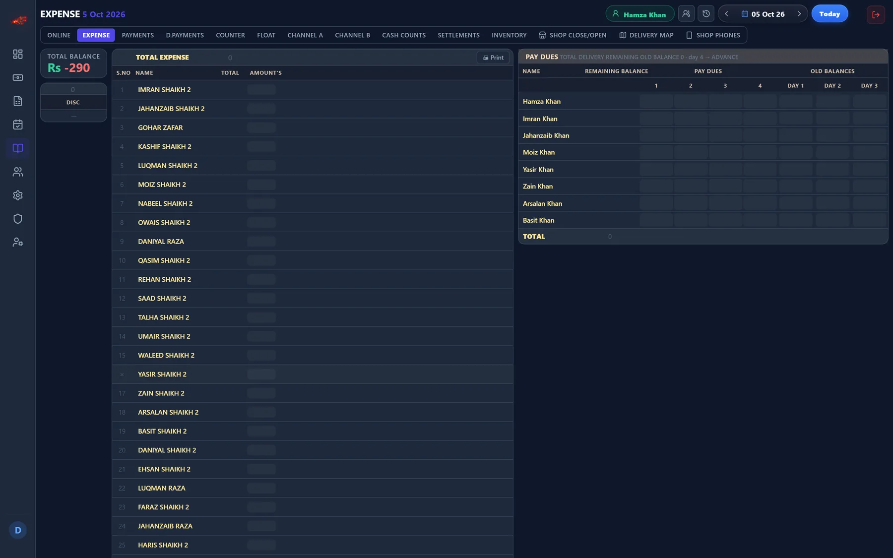
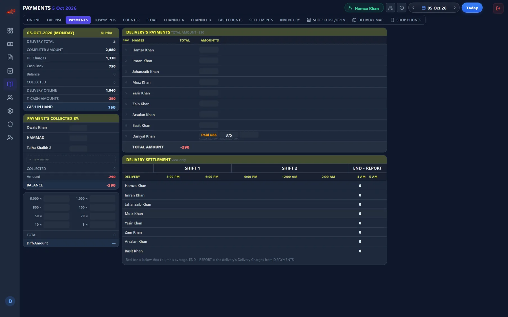
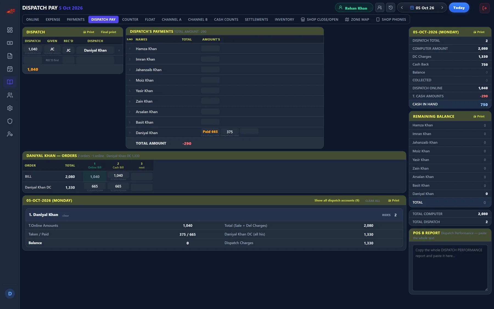
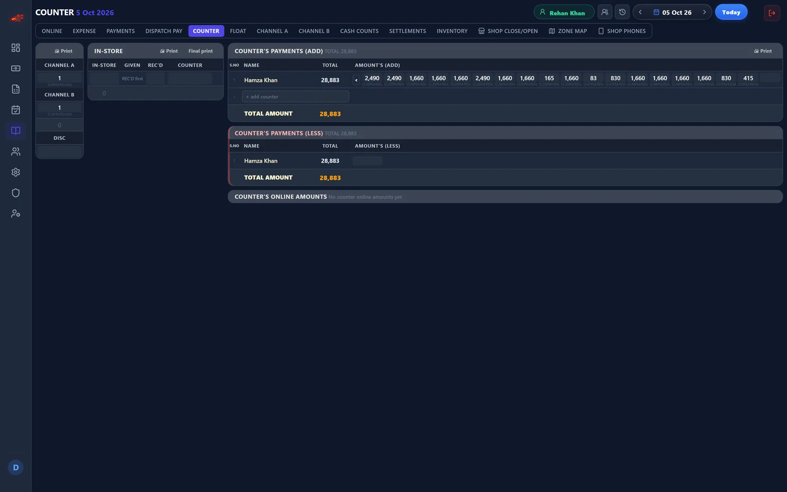
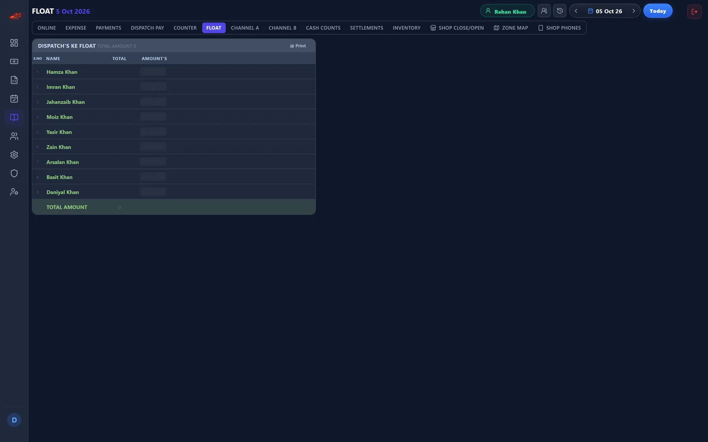
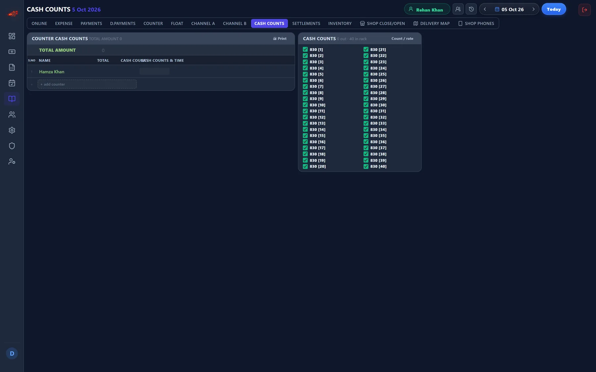
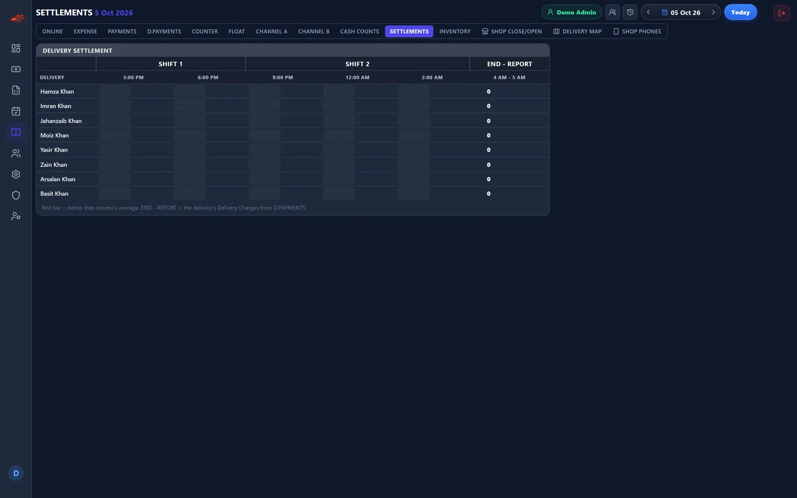
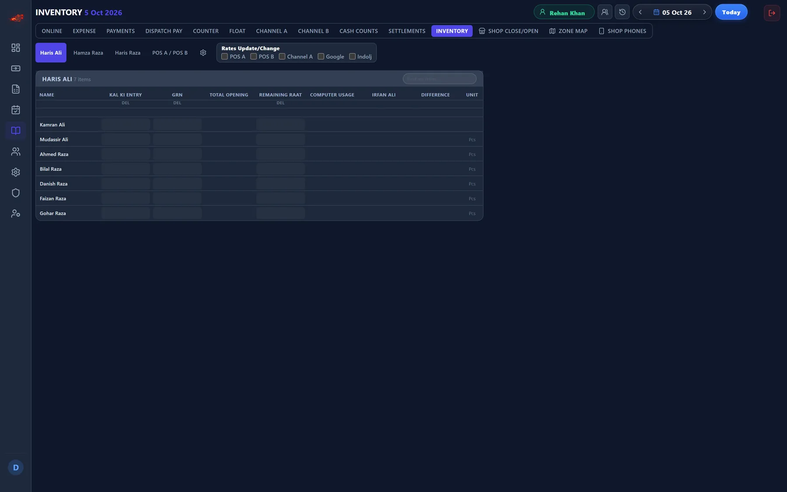
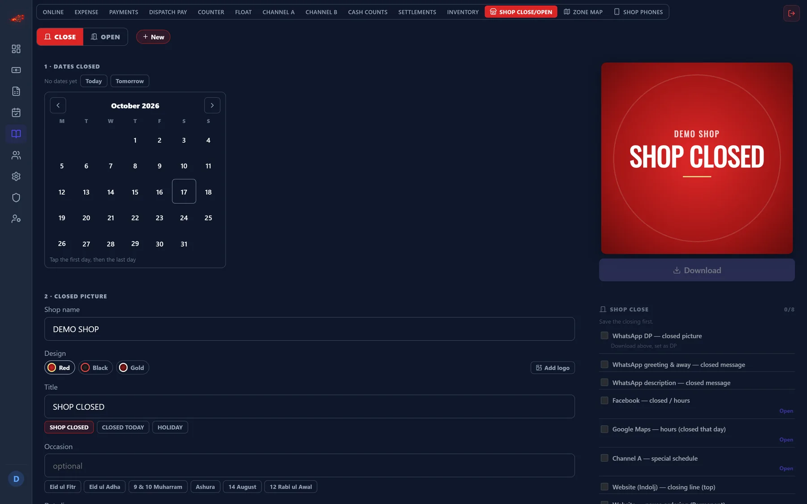

Operations · a module of Axon Attendance
Axon Ledger
The cash desk of a food business, rebuilt so the numbers cannot silently disagree.
The counter closes the day with one number everyone agrees on, and the owner can see, from anywhere and across every branch, whether today's cash, online payments and POS reports match.

The problem
Restaurants, cafes and small food businesses here run the day on cash, wallet transfers and trust. One counter takes every online payment, for orders handed over in person and orders sent out, and logs it by hand against the person who brought it and the wallet it landed in.
The system this replaces ran on three linked spreadsheet workbooks. Every account needed its own column, driven by its own INDEX/SMALL/IF/COUNTIF array formula, so adding a person meant writing a formula rather than typing a name. And the closing sheet that everything rolled up into carried live #REF! errors: broken references nobody had a way to notice.
What it does
One entry point that matches how the counter already works: pick the account, enter the amount, pick the method. The parts that used to be formulas become queries.
Given and Rec'd keep the meanings the counter already uses. Given is cash handed over; Rec'd is money confirmed arrived. An entry still waiting on its bank notification shows as “REC'D first” rather than being quietly counted, which is the difference between a number you can close the day on and one you cannot.
Ten more sheets cover the rest of the day's book: expenses, payments, dispatch accounts, counter accounts, float, cash counts, settlements, order channels, inventory and the close.
It is built per branch and per account, so the same system runs for one place or for several without a schema change: a new branch, a new wallet or a new person is a record, never a new column.
Details
- Eleven sheets for one day's trading, from the first online payment to the cash count at close
- Sale Check verifies the day against the POS reports before it can be called closed
- Per-method totals across five wallets and banks, and one running total per account
- Multi-branch from the start: a new branch, wallet or person is a record, not a new column
- Entries awaiting bank confirmation show as “REC'D first” instead of being counted
- Every edit is in the history: who changed what, and when
More screens








